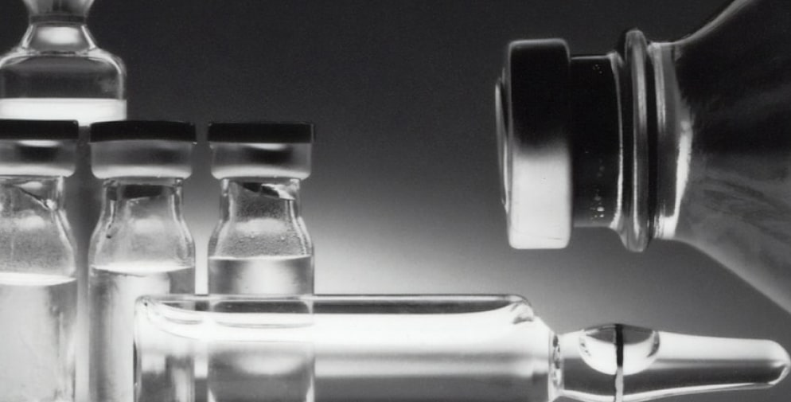

Как выйти из запоя самостоятельно?
При запоях алкоголики пьют целыми днями и неделями, делая небольшие перерывы только для того, чтобы достать очередную порцию алкоголя. Это приводит к тяжелому похмелью и нарушает работу всего организма. С каждым днем выбраться из этого состояния все сложнее, поэтому действовать нужно быстро.
Алкоголь – это яд. Попадая в организм, он проходит через все органы и ткани: печень, почки, головной мозг, сердце и др. Чем больше спиртных напитков выпьет человек, тем сильнее будет интоксикация, с которой столкнется его организм.
Опасность возрастает в разы, если речь идет о запоях. Они могут длиться несколько дней или недель, в течение которых человек будет непрерывно употреблять алкоголь, а при отсутствии спиртных напитков может прибегнуть даже к их суррогатам (техническим жидкостям, медицинскому спирту и др.).
Из запойного состояния нужно выходить, как можно быстрее, пока оно не привело к тяжелым последствиям не только для организма, но и психики.
Вред запоя:
- Печень. Повреждают клетки печени (гепатоциты), которые затем замещает соединительная ткань. Это приводит к развитию цирроза печени и повышает риск необратимой интоксикации всего организма на фоне алкогольной зависимости
- Сердечнососудистая система. При чрезмерном употреблении алкоголя в сердце скапливается жир. Мышца истощается и перестает справляться со своей основной функцией – перекачиванием крови. Это может привести к развитию сердечной недостаточности и летальному исходу
- Головной мозг. Злоупотребление спиртным приводит к изменению структур и тканей мозга. Человек начинает деградировать. Наблюдается снижение интеллектуальных способностей, а также серьезные проблемы с памятью, концентрацией, логикой и даже вниманием
- Пищеварительная система. Длительное употребление спиртных напитков приводит к повреждению слизистых оболочек всех органов пищеварения и развитию характерных состояний (изжоги, диареи, гастрита, колита и др.)
- Почки. Пиелонефрит и почечная недостаточность – это заболевания, с которыми сталкиваются многие запойные алкоголики. Если своевременно не принять меры, они могут привести к тяжелым последствиям
- Психическое состояние. У алкоголиков, которые уходят в длительные пьянки, часто возникают проблемы с психикой: острые алкогольные психозы, бредовые идеи, галлюцинации и др., вплоть до «белой горячки» (алкогольного делирия)
Чтобы не допустить этих последствий и избежать летального исхода, нужно немедленно выходить из запоя. Не откладывая это на завтра и не придумывая никаких других оправданий. Действовать нужно быстро, потому что от этого зависит не только здоровье, но и жизнь человека
3 условия, которые помогут преодолеть запой
- Психологическая подготовка. Мотивация – это то, что лучше всего помогает в лечении алкогольной зависимости. Если вы будете четко осознавать проблему, то сможете принять меры для её преодоления и отказаться от соблазна «выпить по еще одной» в кругу собутыльников.
- Помощь со стороны семьи. Родственники и друзья всегда готовы помочь. Главное, не стесняться обращаться к ним за поддержкой. Общими силами вы сможете гораздо быстрее преодолеть алкогольную зависимость.
- Методы и средства. Залог успеха – это правильная подготовка. Заранее узнайте о том, какие медицинские препараты и народные средства можно использовать, имеются ли к ним противопоказания и можно ли их комбинировать.